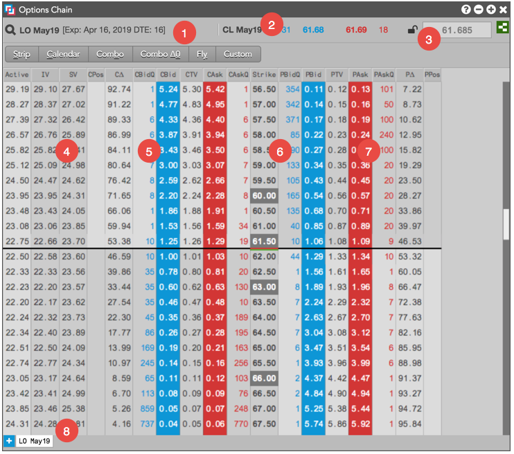
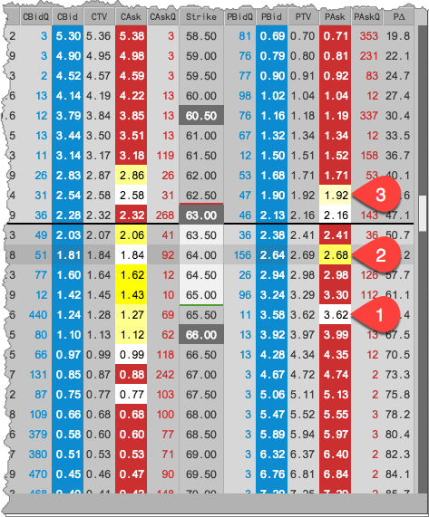

The Options Chain display consists of the following:

- Product and Expiry — Shows the exchange, product symbol, and expiry that you selected for the options.
- Underlying instrument — Shows the instrument name as well as the best bid and ask prices and quantities for the underlying futures contract.
- Underlying price lock — Shows if the Options Chain is locked or unlocked for the underlying price entered in the lock field.
- Volatility — Columns that display volatility values for each options contract.
- Call data — Columns that display prices and quantities for Call options contracts.
- Put data — Columns that display prices and quantities for Put options contracts.
- Strike — Shows prices for exercising the option to buy or sell the underlying.
- Tabs — Allow you to add instruments for a single product in the Options Chain. Each tab shows the contract expiry. Each new tab that is added shows the next expiry for the product.
Through the settings, you can also highlight potential trading opportunities based on the relationship between your theoretical values and the market. You can highlight a Bid/Ask price when the theoretical value approaches the market by a number of ticks. You can also display prices in gradient yellow shades based on how far through the market your theortical values have crossed.

-
The theoretical value is highlighted white because the theoretical value is within a specified number of ticks of the market.
-
The lighter shade of yellow indicates the theoretical price slightly crossed the market, so indicates a small edge at that price level.
-
The darker shade of yellow indicates the theoretical price crossed the market by a greater amount, so indicates more edge at that price level.